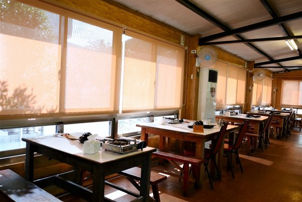
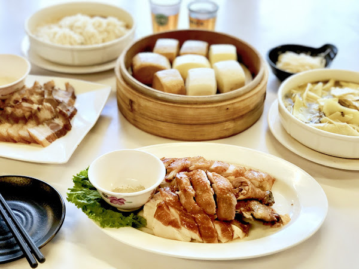
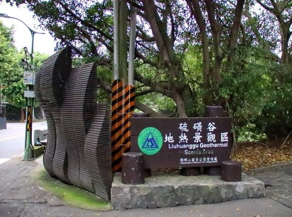
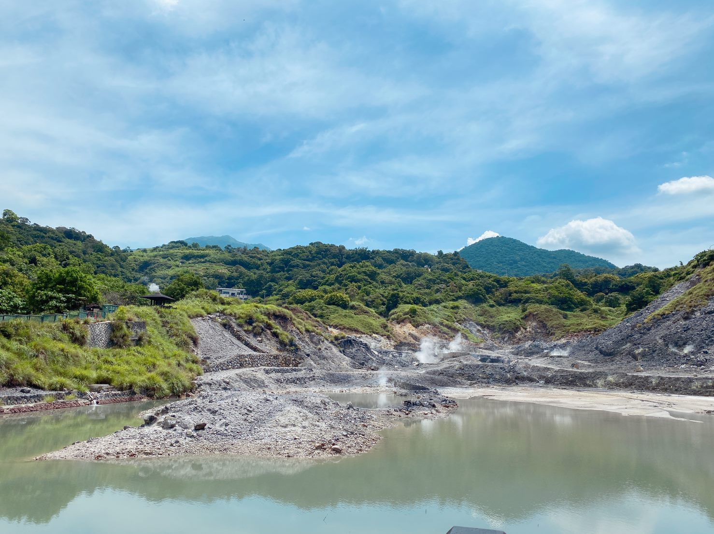
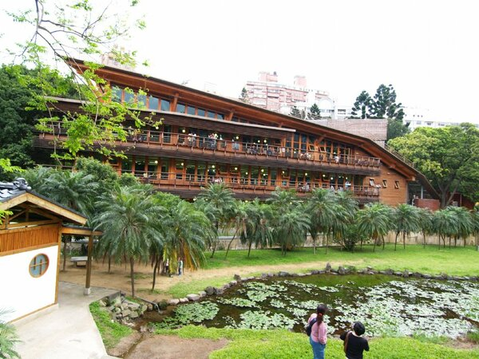

位在陽明山永公路上 可搭公車於劍潭站搭乘303首都客運至菁山里(三)下車~
菜色以中式料理為主，主打土雞及炒野菜，還有人氣排行榜料理推薦，也有牛豬羊肉、基隆崁仔頂進貨的海鮮、蛋豆腐類、雞湯及點心、飯類。

至會館後，可向櫃台買雞蛋(一顆$20、兩顆$30)，自己買雞蛋進來煮要酌收清潔費100元，如果人多或許可以考慮。

準備要去門外的溫泉井水煮溫泉蛋囉～
這裡門口設置的溫泉煮蛋我個人感覺純粹是體驗活動，上頭有掛示牌告訴你該怎麼決定溫泉蛋的熟度，且一旁貼心的附有冷水區可以讓蛋降溫好剝蛋殼，不曉得是甚麼原因，還是心理因素，從小就覺得溫泉煮蛋特別好吃!!
地熱谷位於台北市北投區北投公園旁，與捷運淡水線新北投捷運站距離約15分鐘的路程，為北投溫泉的源頭之一，是北投編號56的公園，總面積約為3500平方公尺，是大屯山群區域內水溫最高的溫泉。
硫磺煙霧的景色擁有「礦泉玉霧」的美稱，是日據時代台灣八勝十二景之一；地熱谷早年是遊客煮食和遊樂的所在地。

不僅容易發生燙傷意外，更會造成溫泉水質的污染，造成護欄常崩坍，因此在民國83年自來水處將地熱谷重新整修，溫泉池四周設有欄杆、賞景涼亭和親水溝渠，民眾雖然無法在煮食但可在親水溝渠泡腳，讓民眾來到地熱谷依然能享受到溫泉。

【地熱谷－溫泉泉質】
地熱谷溫泉泉水清澈，溫度約在90℃至100℃ 水質是屬鹽酸酸性泉，PH值約1.6，又俗稱「青磺泉」。當地居民亦稱為「磺水頭」，不可用肥皂洗身，屬強酸類，對建築物及金屬品腐蝕性強，不可飲用，但據說此類溫泉對關節、筋肉、皮膚、支氣管、神經均有益。
地熱谷因終年瀰漫著硫磺煙霧，且谷底地質鬆軟，常常有來此民眾失足跌倒被燙傷，所以又被稱為「地獄谷」，也有人稱為「鬼湖」。
草山行館位於台北市北投區湖底路，陽明山國家公園第一停車場旁。 草山行館佔地大約549坪，為1920年代的典型日式建築，草山行館原屬台灣糖業株式會社招待所。
民國38年12月，國民黨政府遷台，先總統蔣公以草山行館為居處，而成為總統官邸，民國39年5月，士林官邸修建完成後才改為『夏季避暑行館』亦稱『草山老官邸』

直至民國59年間位於七星山上的中興賓館落成，蔣公才遷居中興賓館。草山行館是台灣第一座總統官邸，原本是為了接待日本皇室太子裕仁所建，太子裕仁就是昭和天皇，昭和天皇1923年來台上了陽明山，但是在草山行館停留的時間卻不到2小時

為了迎接裕仁太子，台灣在那個時間點蓋了不少類似草山行館的太子賓館，但有些他根本沒去過
裕仁太子離台後，草山行館一度被當成日籍名流聚會的溫泉別墅
隨著日軍在第二次世界大戰慘敗、國共內戰造成國民政府播遷來台，國民政府並決定定居於草山行館，於是草山行館的身份也由太子賓館轉變為台灣第一個總統官邸。
位於大屯火山群南端，為一爆裂口地形，呈東西向延伸之盆谷，谷地長約1公里，寬約80至200公尺，有豐富的火山碎屑岩和沉積岩地質地形及人文景觀。
其西端隔一狹窄鞍部（分水嶺）與東側之龍鳳谷（雙重溪爆裂口）相鄰，鞍部附近即為惇敘工商及遊客服務站所在。此地是清康熙36年（1697）郁永河採硫之處。
日據時代德記礦業公司也曾在此地開採硫磺及硫化鐵。
盆谷內的噴氣口和溫泉相當發達，谷內設有多處溫泉集水區，此處溫泉即新北投各旅社溫泉之泉源，由水管輸出。
過去一度曾有枯竭現象，後經人工鑿氣井30餘口引出蒸氣加熱地表水而成溫泉，屬酸性硫酸鹽泉，俗稱「白磺」。

北投溫泉博物館前身為「北投公共浴場」，由日本時期的台北廳長井村大吉下令擘劃，總督府建築設計師森山松之助監造，完工於1913年(大正二年)6月17日， 為和洋折衷風格的雙層建築，亦為當時東亞最大的溫泉公共浴場。
一樓浴池區為磚造，二樓休憩區為木造，入口處位於二樓。 仿照日本靜岡縣伊豆山溫泉浴場所建。 二樓休憩區設有涼亭、換鞋玄關，以及可供遊客泡湯後乘涼的榻榻米大廳。 大廳旁另有一突出平台「望樓」，可在此欣賞北投山光水色。此外室內也販售餐點飲料，有時甚至安排藝文演出。1923年(大正12年)日本皇太子裕仁抵台視察，亦曾至北投參觀公共浴場與考察溪中的北投石。為此浴場還在二樓增建「御休所」供其休憩，其位置就在現今溫博館的視聽室。

遊客下樓梯後可至一樓浴池區更衣泡湯。一樓最主要的特色就是以服務男賓為主、由圓拱列柱圍起的羅馬風格大浴池，以及浴池外側迴廊牆上的鑲嵌彩繪玻璃窗花，兩者一同塑造出極為明亮華麗的沐浴氣氛。大浴池另一側則有小浴池，為當時為女性與兒童泡湯的場所，此外還另設有獨立的浴室和休息間供重要賓客使用。
北投公共浴場可謂北投溫泉發展史上極重要的公共休閒娛樂場所。 戰後公共浴場曾作為中山堂、台北縣議會招待所、民眾服務處、民防指揮部與光明派出所等使用，因管理單位更迭而終至荒廢。直到1994年，一群北投國小師生在鄉土校外教學的過程中，發現形同廢墟的北投公共浴場，為保存古蹟及空間再利用。 這群孩子、社區居民及文史工作者一同發起連署陳情書，希望保留浴場。終於在1997年經內政部公告為三級古蹟，1998年10月31日在地方熱心居民與臺北市政府的斥資整修下，以「北投溫泉博物館」之名正式重新開放使用。
北投溫泉親水公園位於捷運新北投站往地熱谷方向，步行即可到達。
公園以北投溪為中心，自新北投公園至地熱谷，涵蓋北投公園及其週邊的帶狀綠地，面積約六萬餘平方公尺。
園區內除了溫泉浴池外，還新闢了沿溪棧道、咖啡座、露天劇場，未來還將陸續興建兒童親水區、溜冰場等，重塑溫泉鄉的新風貌。


臺北市立圖書館北投分館是臺灣首座綠建築圖書館。 座落於林木茂密、生態環境豐富的北投公園內，與溫泉博物館比鄰，地下一層、地上二層，總面積650坪的圖書館。
本分館座落於在綠意盎然的北投公園內，室內書香，戶外鳥語，相映成趣，閱讀成了一件愜意、享受的活動。
屋頂為輕質生態屋頂，設有太陽能光電板發電，可發電16千瓦電力，採大量陽台深遮陽及垂直木格柵，降低熱輻射進入室內，降低耗能達到節能效果。綠化屋頂及斜坡草坡設計可涵養水分自然排水至雨水回收槽，再利用回收水澆灌植栽及沖水馬桶，達到綠化與減少水資源浪費。建物使用木材及鋼材，該建材皆可回收再利用，減少廢棄物對環境的破壞。
在室內健康與環境指標方面，對於木材建材除做白蟻防治外，並使用生態塗料及免除不必要的裝修工程，減少污染及有毒物質的釋放，避免影響人體健康。
本分館並在94年2月份榮獲內政部綠建築九大指標候選證書，包括「生物多樣性」、「綠化量」、「基地保水」、「水資源」、「日常節能」、「二氧化碳減量」、「室內健康與環境」、「廢棄物減量」、「汙水與垃圾改善」九項指標。
 333桃園市龜山區德明路5號
333桃園市龜山區德明路5號 TEL:(03)1234-5678
TEL:(03)1234-5678 EMAIL:123456789@gmail.com
EMAIL:123456789@gmail.com